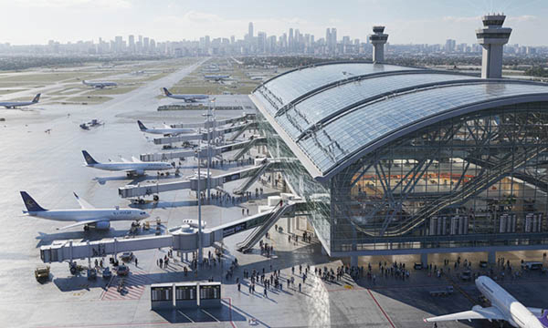

Airports are among the most complex transportation environments in the world, handling thousands of passengers, aircraft movements, and logistical operations every day. Across Germany, France, Italy, Switzerland, the United Kingdom, Norway, Austria, Poland, and the Benelux countries (Belgium, Netherlands, Luxembourg), airports must maintain highly organized systems to ensure that passengers, luggage, and aircraft operations move efficiently and safely.
Large terminals, security checkpoints, baggage handling areas, maintenance zones, and runways require clear organization and effective visual communication to maintain operational flow.
In such high-activity environments, professional signage and labeling play a critical role. Directional signage, safety markings, warning decals, machine labels, gate indicators, and operational signs guide passengers and staff through complex airport infrastructure.
These signs must remain clear and durable despite heavy use, environmental exposure, and constant operational activity.
At SignXpert, we specialize in industrial signage and labeling solutions designed for airports across Germany and Europe, providing durable and highly visible signage systems that support navigation, safety, and operational efficiency in demanding airport environments.
Airport Infrastructure Installation: Creating an Organized and Efficient Environment
The development and installation of airport infrastructure require precise planning and strict adherence to safety and operational standards.
In Germany, France, Italy, Switzerland, the UK, Norway, Austria, Poland, and the Benelux countries, airports consist of interconnected systems including terminals, baggage handling systems, aircraft service zones, technical areas, and runway operations.
Each component must be clearly identified and organized to ensure smooth operation and safe navigation for both passengers and airport personnel.
Industrial signage plays a vital role during the installation and development of airport facilities. Directional signs guide passenger flow through terminals, while technical labels and safety markers identify restricted zones, maintenance areas, and operational infrastructure.
Clear labeling of electrical systems, baggage handling equipment, service corridors, and aircraft support systems helps technicians and operational staff maintain control over complex environments.
In countries such as Germany and Austria, compliance with European aviation safety standards requires clearly marked operational areas, emergency exits, and restricted access zones.
By integrating durable signage and structured labeling during the installation phase, airports create an organized infrastructure capable of supporting efficient operations and safe passenger movement.
Passenger Navigation and Flow: Clear Signage Improves the Travel Experience
Airports are often large and complex spaces where travelers must navigate multiple processes, including check-in, security screening, boarding gates, and baggage collection.
For passengers traveling through airports in Germany, France, Italy, Switzerland, the UK, Norway, Austria, Poland, and the Benelux countries, clear and intuitive signage significantly improves the travel experience.
Directional signs, terminal maps, gate indicators, and information panels help passengers move efficiently through the airport without confusion or delays.
High-quality signage reduces congestion and minimizes the need for assistance from airport staff, allowing travelers to quickly find check-in counters, security checkpoints, boarding gates, restrooms, restaurants, and baggage claim areas.
Accessible signage, including tactile and high-contrast signs, ensures that passengers with disabilities can navigate the airport safely and independently.
By maintaining clear visual guidance across terminals and service areas, airports improve passenger satisfaction while maintaining efficient operational flow throughout the facility.
Safety and Operational Control: Signage Protects Staff and Passengers
Safety is a fundamental priority in airport environments, where large numbers of people, vehicles, and aircraft operate simultaneously.
Warning signs, hazard labels, and safety decals are essential tools for preventing accidents and ensuring that both staff and passengers understand potential risks.
Across Germany, France, Italy, Switzerland, the United Kingdom, Norway, Austria, Poland, and the Benelux countries, airports rely on highly visible safety signage to identify emergency exits, restricted areas, aircraft service zones, and high-risk locations such as runways and loading zones.
In technical and operational areas such as baggage handling systems, aircraft maintenance hangars, and service vehicle routes, proper labeling allows staff to quickly recognize hazards and follow safety procedures.
Durable signage materials are essential because airport infrastructure is exposed to constant movement, mechanical vibration, and environmental conditions such as rain, temperature fluctuations, and UV exposure.
Reliable signage ensures that safety information remains visible and effective over time.
Efficiency and Maintenance: Structured Labeling Supports Airport Operations
Efficient airport operations depend on the ability of maintenance teams and operational staff to quickly locate and manage complex systems.
Aircraft servicing equipment, baggage transport systems, electrical installations, fuel systems, and maintenance facilities require clear labeling to ensure accurate identification and fast troubleshooting.
In major airports throughout Germany, France, Italy, Switzerland, the UK, Norway, Austria, Poland, and the Benelux countries, structured labeling systems help teams coordinate maintenance work and avoid operational delays.
Cable markers, equipment identification plates, directional signs, and technical labels allow technicians to navigate service areas quickly and perform maintenance tasks efficiently.
Proper labeling reduces downtime, supports faster repairs, and ensures that operational systems continue to function without interruption.
In busy airport environments where delays can quickly affect thousands of travelers, clear and durable labeling contributes directly to smoother operations and improved infrastructure reliability.
Why SignXpert is the Trusted Partner for Airport Signage in Germany and Europe
SignXpert provides professional signage and labeling solutions specifically designed for airport environments across Germany, France, Italy, Switzerland, the United Kingdom, Norway, Austria, Poland, and the Benelux countries.
Our product range includes directional signage, safety decals, warning signs, engraved identification plates, technical labels, QR code asset tags, and operational signage engineered for demanding infrastructure environments.
Our signage solutions are built to withstand heavy traffic, environmental exposure, mechanical wear, and long-term operational use.
With our user-friendly online customization system, airport operators can design and order signage tailored to their specific infrastructure needs, ensuring clear communication and reliable durability.
Fast production and reliable delivery across Europe help airports maintain uninterrupted operations and ensure that signage installations remain on schedule.
By choosing SignXpert, airports gain access to durable, high-performance signage systems that enhance passenger navigation, improve safety standards, support maintenance workflows, and contribute to efficient airport operations across Germany and Europe.